第6世代（カロス地方）ポケモンの英語名一覧
全72匹の英語名と由来
第6世代（カロス地方）のポケモン72匹の英語名を、図鑑番号順にまとめました。名前を押すと、英語版図鑑の説明文と日本語訳、英語名の由来が見られます。
| No. | 日本語名 | 英語名 | 英語名の由来 |
|---|---|---|---|
| 650 | Chespin | chestnut（栗）、urchin（ウニ、いたずらっ子）、pin（ピン）とCastanopsis（シイ属の木） | |
| 651 | 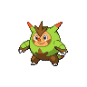 ハリボーグ | Quilladin | Spine（背骨）とpaladin（聖騎士） |
| 652 | Chesnaught | chestnut（栗）、juggernaut（止められない巨大な力）、knight（騎士）とdreadnought（ド級… | |
| 653 | Fennekin | fennec fox（フェネック）、kindle（火をつける）と-kin（「小さい〜」を表す語尾） | |
| 654 | Braixen | braise（煮込む）とvixen（メスギツネ） | |
| 655 | 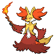 マフォクシー | Delphox | Delphic oracle（デルポイの神託）とfox（キツネ） |
| 656 | Froakie | frog（カエル）、froth（泡）、croak（ケロケロ鳴く）とrookie（新人） | |
| 657 | 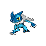 ゲコガシラ | Frogadier | frog（カエル）、brigadier（准将）とgrenadier（てき弾兵） |
| 658 | Greninja | grenouille（フランス語で「カエル」）とninja（忍者） | |
| 659 | 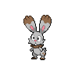 ホルビー | Bunnelby | bunny（うさちゃん）とtunnel（トンネル） |
| 660 | 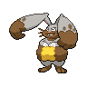 ホルード | Diggersby | digger（掘る者）とbunny（うさちゃん） |
| 661 | Fletchling | fletching（矢羽根）、fledge（羽が生えそろう）とhatchling（ふ化したばかりのひな） | |
| 662 | 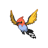 ヒノヤコマ | Fletchinder | fletching（矢羽根）、tinder（火口（ほくち））とcinder（燃えかす） |
| 663 | 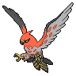 ファイアロー | Talonflame | ドイツ語の名前は「Fiaro」で、fire（火）、arrow（矢）から作られている |
| 664 | 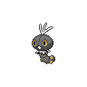 コフキムシ | Scatterbug | scatter（まき散らす）、bug（虫）とlitterbug（ごみを捨てる人） |
| 665 | 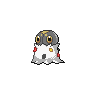 コフーライ | Spewpa | spew（吐き出す）とpupa（さなぎ） |
| 666 | 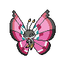 ビビヨン | Vivillon | vivid（鮮やかな）とpapillon（フランス語で「チョウ」） |
| 667 | Litleo | little（小さい）、lit（灯った）とleo（ラテン語で「ライオン」） | |
| 668 | 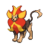 カエンジシ | Pyroar | pyro-（「火の」を表す接頭語）とroar（ほえる） |
| 669 | 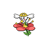 フラベベ | Flabebe | bébé（フランス語で「赤ちゃん」）がもとになっていると考えられている |
| 670 | 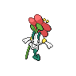 フラエッテ | Floette | flower（花）とfloret（小花） |
| 671 | 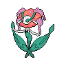 フラージェス | Florges | flower（花）、flora（植物）とgorgeous（ゴージャスな） |
| 672 | 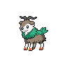 メェークル | Skiddo | skid（スリップする）とkiddo（ちびっ子） |
| 673 | 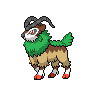 ゴーゴート | Gogoat | go（囲碁、行く）とgoat（ヤギ） |
| 674 | 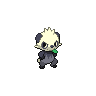 ヤンチャム | Pancham | panda（パンダ）、punch（パンチ）とchampion（チャンピオン） |
| 675 | Pangoro | panda（パンダ）がもとになっていると考えられている | |
| 676 | Furfrou | fur（毛皮）とfrou-frou（ひらひらの飾り） | |
| 677 | Espurr | ESP（超能力）、esper（超能力者）とpurr（ゴロゴロ（猫ののど）） | |
| 678 | 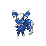 ニャオニクス | Meowstic | meow（ニャー）とmystic（神秘的な） |
| 679 | 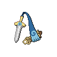 ヒトツキ | Honedge | hone（研ぐ）、one（1）とedge（刃） |
| 680 | Doublade | double（二重の）とblade（刃） | |
| 681 | Aegislash | Aegis（ギリシャ神話の盾アイギス）とslash（切りつける） | |
| 682 | 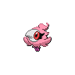 シュシュプ | Spritzee | sprite（妖精）がもとになっていると考えられている |
| 683 | 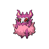 フレフワン | Aromatisse | aromatic（香りのよい）とfinesse（技巧） |
| 684 | 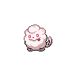 ペロッパフ | Swirlix | swirl（うずまき）とlicks（なめる） |
| 685 | 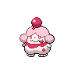 ペロリーム | Slurpuff | slurp（ズルズルすする）とpuff（ぷくっとふくらむ） |
| 686 | Inkay | ink（墨）、inky（墨のような）、Cephalopod（頭足類）とokay（オーケー） | |
| 687 | 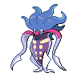 カラマネロ | Malamar | μαλάκιο malákio（ギリシャ語で「軟体動物」）とmare（ラテン語で「海」） |
| 688 | 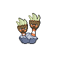 カメテテ | Binacle | bi-（「2つの」を表す接頭語）、barnacle（フジツボ）、knuckle（こぶし）とbinnacle（羅針盤の台） |
| 689 | Barbaracle | barbaric（野蛮な）とbarnacle（フジツボ） | |
| 690 | Skrelp | scrawny（やせた）とkelp（コンブ） | |
| 691 | 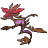 ドラミドロ | Dragalge | dragon（ドラゴン）とalgae（藻） |
| 692 | 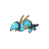 ウデッポウ | Clauncher | claw（かぎ爪）とlauncher（発射装置） |
| 693 | Clawitzer | claw（かぎ爪）とhowitzer（りゅう弾砲） | |
| 694 | Helioptile | ἥλιος hḗlios（ギリシャ語で「太陽」）とreptile（爬虫類） | |
| 695 | Heliolisk | フランス語の名前は「Iguolta」で、iguane（イグアナ）、Volta（物理学者ボルタ）から作られている | |
| 696 | 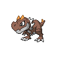 チゴラス | Tyrunt | Tyrannosaurus（ティラノサウルス）、tyrant（暴君）とrunt（ちび） |
| 697 | Tyrantrum | Tyrannosaurus（ティラノサウルス）、tyrant（暴君）とtantrum（かんしゃく） | |
| 698 | Amaura | Amargasaurus（アマルガサウルス（恐竜））とaurora（オーロラ） | |
| 699 | Aurorus | aurora（オーロラ）とAmargasaurus（アマルガサウルス（恐竜）） | |
| 700 | 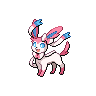 ニンフィア | Sylveon | sylph（風の精シルフ）、sylvan（森の）とSilvanus（ローマ神話の森の神シルウァヌス） |
| 701 | Hawlucha | hawk（タカ）とlucha libre（メキシコのプロレス、ルチャ・リブレ） | |
| 702 | 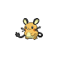 デデンネ | Dedenne | antenne（フランス語で「触角」）がもとになっていると考えられている |
| 703 | Carbink | carbuncle（伝説の生き物カーバンクル）、carbon（炭素）、Carat（カラット）とtink（チン（小さな金属… | |
| 704 | Goomy | goo（べとべとしたもの）、gummy（ねばねばした）とslimy（ぬるぬるの） | |
| 705 | 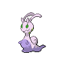 ヌメイル | Sliggoo | slick（つるつるの）、slither（にょろにょろはう）、slippery（すべりやすい）とslimy（ぬるぬるの） |
| 706 | 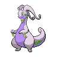 ヌメルゴン | Goodra | goo（べとべとしたもの）、dragon（ドラゴン）とHydra（ギリシャ神話のヒュドラ） |
| 707 | 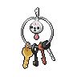 クレッフィ | Klefki | clef（音部記号）、key（鍵）とkleftis（ギリシャ語で「泥棒」） |
| 708 | Phantump | phantom（幻影）とstump（切り株） | |
| 709 | 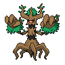 オーロット | Trevenant | tree（木）、revenant（よみがえった亡霊）とtreant（木の巨人トレント） |
| 710 | Pumpkaboo | pumpkin（カボチャ）、boo（ばあ！（おどかす声））とPeekaboo（いないいないばあ） | |
| 711 | 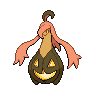 パンプジン | Gourgeist | gourd（ひょうたん）とgeist（ドイツ語で「霊」） |
| 712 | Bergmite | iceberg（氷山）、mite（ダニ、ちびっ子）とstalagmite（石筍） | |
| 713 | 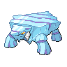 クレベース | Avalugg | avalanche（雪崩）とlug（引きずる） |
| 714 | Noibat | noise（騒音）とbat（コウモリ） | |
| 715 | 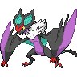 オンバーン | Noivern | noise（騒音）とwyvern（飛竜ワイバーン） |
| 716 | Xerneas | cervus（ラテン語で「シカ」）、Cernunnos（ケルト神話の角の神ケルヌンノス）とCeryneian Hind（… | |
| 717 | Yveltal | yvel（古い英語で「悪」）、quetzal（ケツァール（鳥））とtalon（かぎ爪） | |
| 718 | 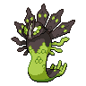 ジガルデ | Zygarde | ζυγωτός zygōtós（ギリシャ語で「対になった」）、zygote（受精卵）とgarde（フランス語で「守り」） |
| 719 | Diancie | diamond（ダイヤモンド）、fancy（しゃれた）とpixie（妖精ピクシー） | |
| 720 | Hoopa | hoop（輪）がもとになっていると考えられている | |
| 721 | Volcanion | volcano（火山）、volcanic（火山の）、lion（ライオン）とunion（結合） |